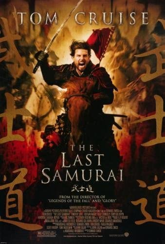

Home
Synopsis
In the 1870s, Captain Nathan Algren (Tom Cruise), a cynical veteran of the American Civil War, who will work for anyone, is hired by Americans who want lucrative contracts with the Emperor of Japan to train the peasant conscripts for the first standing Imperial Army in modern warfare using firearms. The Imperial Omura (Masato Harada) cabinet's first priority is to repress a rebellion of traditionalist Samurai, hereditary warriors, who remain devoted to the sacred dynasty, but reject the Westernizing policy, and even refuse firearms. Yet, when his ill-prepared superior force sets out too soon, their panic allows the sword-wielding samurai to crush them. Badly wounded, Algren's courageous stand makes the samurai leader Katsumoto (Ken Watanabe) spare his life. Once nursed to health, he learns to know and respect the old Japanese way, and participates as advisor in Katsumoto's failed attempt to save the Bushido tradition, but Omura gets repressive laws enacted. He must now choose to honor his loyalty to one of the embittered sides when the conflict returns to the battlefield.
Company Credits:Warner Bros., Cruise/Wagner Productions, Bedford Falls Productions
Release Date:5 December 2003
Genres:Action, Drama, War
Rating:7.7/10
Running time:2h 34min